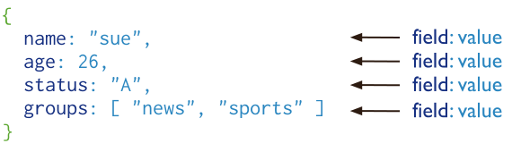

MongoDB的介绍和安装
学习目标
- 了解 MongoDB的优势
- 掌握 MongoDB的安装
MongoDB的介绍
MongoDB 是由C++语言编写的，是一个基于分布式文件存储的开源数据库系统。
在高负载的情况下，添加更多的节点，可以保证服务器性能。
MongoDB 旨在为WEB应用提供可扩展的高性能数据存储解决方案。
MongoDB 将数据存储为一个文档，数据结构由键值(key=>value)对组成。
MongoDB 文档类似于 JSON 对象。字段值可以包含其他文档，数组及文档数组。

3 MongoDB的优势
- 易扩展： NoSQL数据库种类繁多， 但是⼀个共同的特点都是去掉关系数据库的关系型特性。 数据之间⽆关系， 这样就⾮常容易扩展
- ⼤数据量， ⾼性能： NoSQL数据库都具有⾮常⾼的读写性能， 尤其在⼤数据量下， 同样表现优秀。 这得益于它的⽆关系性， 数据库的结构简单
- 灵活的数据模型： NoSQL⽆需事先为要存储的数据建⽴字段， 随时可以存储⾃定义的数据格式。 ⽽在关系数据库⾥， 增删字段是⼀件⾮常麻烦的事情。 如果是⾮常⼤数据量的表， 增加字段简直就是⼀个噩梦
4 MongoDB的安装
下面是Ubuntu的安装命令
sudo apt-get install -y mongodb
各操作系统平台安装MongoDB的文档：https://docs.mongodb.com/manual/administration/install-community/
5 MongoDB的启动
5.1 服务端的启动
- 启动:
sudo service mongod start - 停止:
sudo service mongod stop - 重启:
sudo service mongod restart - 配置文件的位置：
/etc/mongod.conf - 日志的位置：
/var/log/mongodb/mongod.log - 默认端⼝：
27017
5.2 客户端的启动
- 启动本地客户端:
mongo - 查看帮助：
mongo –help - 退出：
exit或者ctrl+c
5.3 MongoDB的官方文档
位置：https://docs.mongodb.com/manual/introduction/
小结
- 掌握MongoDB的安装和启动
- 能够说出MongoDB的优势